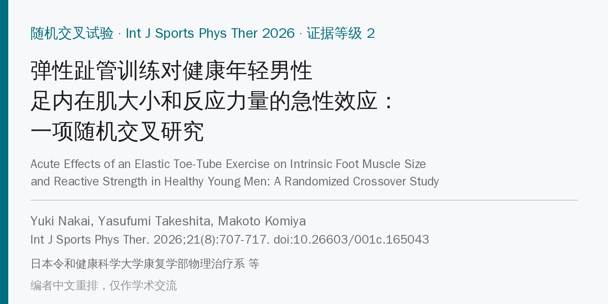
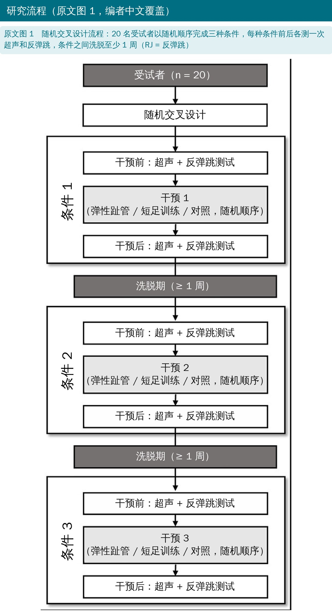
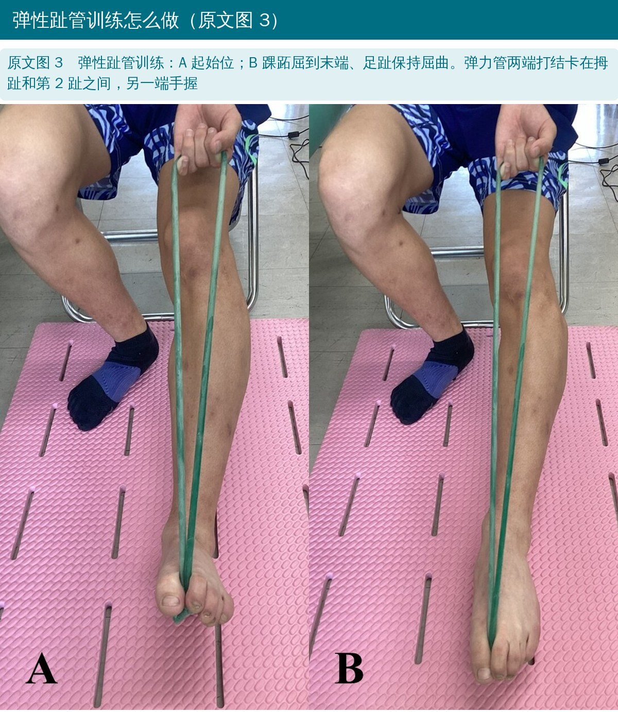
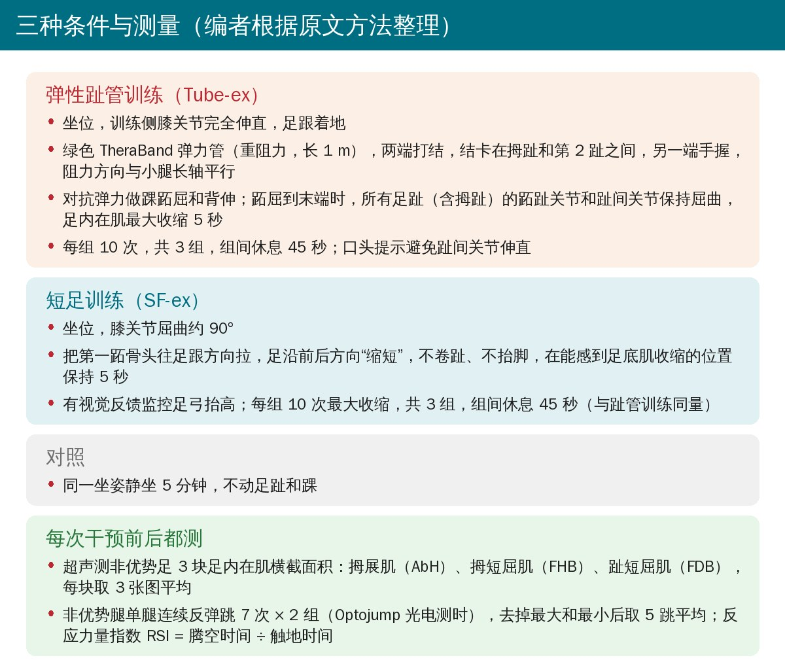
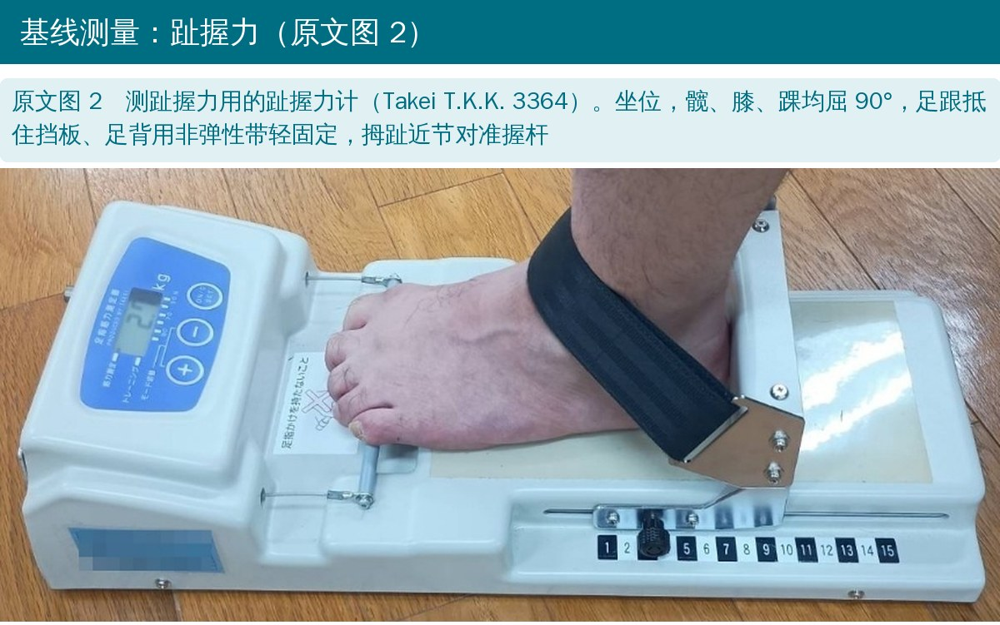
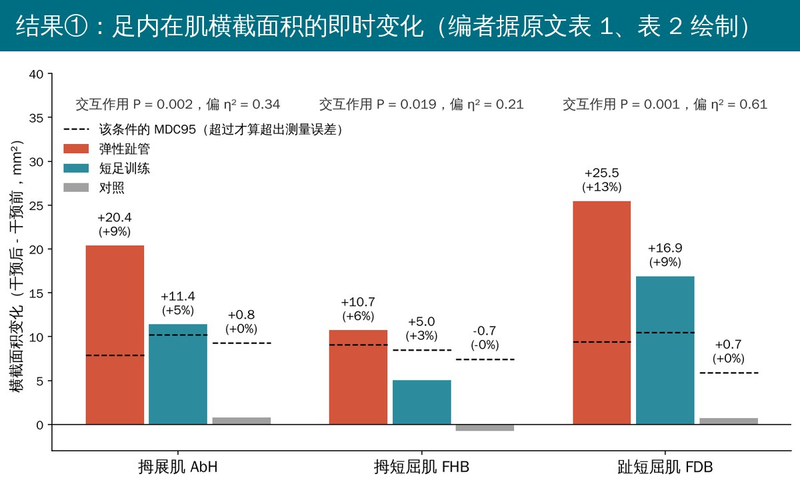
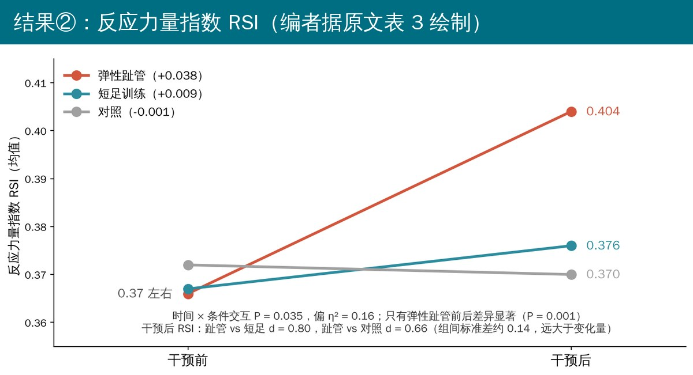
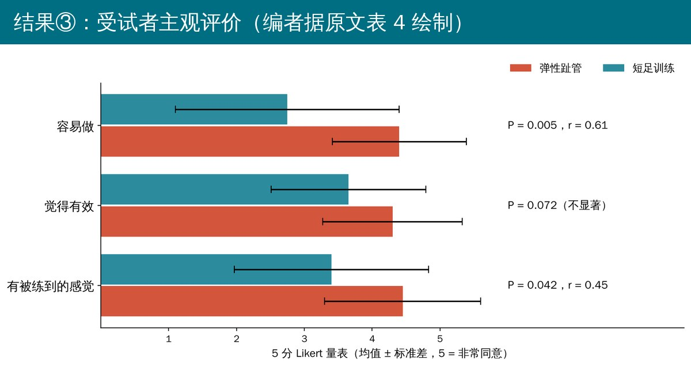
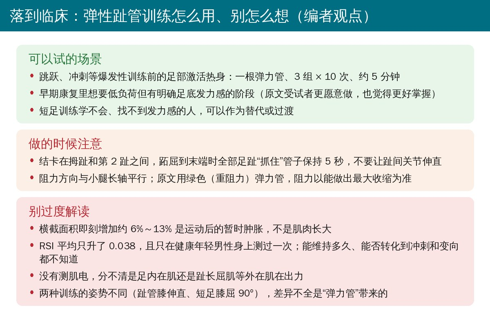

🔖原文信息（编者中文重排）
📚 文献信息
▪ Nakai Y, Takeshita Y, Komiya M. Acute Effects of an Elastic Toe-Tube Exercise on Intrinsic Foot Muscle Size and Reactive Strength in Healthy Young Men: A Randomized Crossover Study. Int J Sports Phys Ther. 2026;21(8):707-717. doi:10.26603/001c.165043
▪ 中文题目：弹性趾管训练对健康年轻男性足内在肌大小和反应力量的急性效应：一项随机交叉研究
▪ 作者来自日本令和健康科学大学、第一工业大学和新潟医疗福祉大学
▪ 文章类型：随机交叉研究（证据等级 2），日本学术振兴会科研经费资助
• 跑跳靠高效的牵张-缩短循环和合适的下肢刚度；足内在肌负责调节足底刚度，在支撑末期传递力量，其形态与触地时间、跳跃表现有关
• 反应力量指数（RSI）= 腾空时间 ÷ 触地时间，反映牵张-缩短循环的效率
• 临床最常用的短足训练要求精细控制，是静态的“缩足”，未必能迁移到跑跳这种动态任务
• 弹力带能在整个关节活动范围持续给负荷；作者设计了弹性趾管训练：用弹力管把足趾屈曲和踝跖屈/背伸结合起来，想更接近支撑末期蹬伸的力学
• 研究目的：比较弹性趾管训练、短足训练和对照对足内在肌横截面积（超声）与 RSI 的即时影响；假设趾管训练提升最多
• 20 名健康、有规律运动习惯的男性大学生（每周中等强度运动 ≥ 150 分钟、持续 6 个月），年龄 20.8 ± 1.2 岁，BMI 24.2 ± 3.3，非优势足趾握力 23.0 ± 8.3 kgf；招募 22 人，2 人因符合排除标准未纳入分析
• 每人按随机顺序完成三种条件，间隔至少 1 周；每次条件前后各测一次超声和反弹跳
• 样本量：按单因素三水平重复测量、假设 d = 1.0 估算至少 10 人

🔖原文图 1（英文由编者译成中文覆盖）

🔖原文图 3（照片内只有分图字母，图注由编者翻译）

🔖编者根据原文方法整理
• 横截面积：俯卧屈膝 90°、踝中立，超声在固定探头支架下测非优势足拇展肌（内踝前方）、拇短屈肌（第一跖骨基底）、趾短屈肌（跟骨内侧结节到第 3 趾基底连线中点），每块肌肉 3 张图，ImageJ 描边取平均
• RSI：双手叉腰，非优势腿单腿连续反弹跳 7 次、尽量跳高并缩短触地，2 组间隔 1 分钟；去掉最大最小后取 5 跳平均，取较好一组
• 主观评价：做完两种训练后用 5 分 Likert 量表评“容易做”“觉得有效”“有被练到的感觉”
• 统计：条件（3）× 时间（2）双因素重复测量方差分析，事后比较用 Bonferroni 校正；非正态数据和主观评分用 Wilcoxon 符号秩检验

🔖原文图 2（照片内为日文，无英文；图注由编者翻译）
• 超声测量的组内信度 ICC 0.969～0.997，测量标准误 2.1～3.8 mm²，最小可检测变化（MDC95）5.9～10.5 mm²，约为平均值的 3%～5%
• 三块肌肉都有显著的时间 × 条件交互（P ≤ 0.019，偏 η² 0.21～0.61）
• 趾管训练后：拇展肌 +20.4 mm²、拇短屈肌 +10.7 mm²、趾短屈肌 +25.5 mm²，约 +6%～13%，三块都超过了 MDC95
• 短足训练后：拇展肌 +11.4、拇短屈肌 +5.0、趾短屈肌 +16.9 mm²，拇展肌和趾短屈肌超过 MDC95，拇短屈肌没有；对照组均无超过 MDC95 的变化

🔖编者据原文表 1、表 2 绘制
• 时间 × 条件交互 P = 0.035（偏 η² = 0.16）；只有趾管训练前后显著提高：0.366 → 0.404（+0.038，P = 0.001），短足训练 +0.009、对照 −0.001 均无变化
• 干预后的 RSI，趾管训练高于短足训练（d = 0.80）和对照（d = 0.66），事后比较用 Shaffer 校正

🔖编者据原文表 3 绘制
• “容易做”：趾管 4.40 vs 短足 2.75（P = 0.005）；“有被练到的感觉”：4.45 vs 3.40（P = 0.042）；“觉得有效”：4.30 vs 3.65，差异不显著（P = 0.072）

🔖编者据原文表 4 绘制
• 趾管训练在弹性阻力下让足趾屈曲与踝关节运动配合，并在跖屈末端保持跖趾关节屈曲，外部负荷下足内在肌的需求更大；短足训练是阻力很小的静态缩足，所以形态和表现的变化都更小
• 6%～13% 的横截面积增加与既往报告的足趾屈曲任务后 7%～10% 的即时增大一致，被解读为肌内压升高和灌注增加引起的暂时肿胀，反映了更多的肌纤维募集
• RSI 提高提示快速触地时的力传递效率更高，可能与足底刚度调节改善有关；但没测肌电，不能区分足内在肌和足外在屈趾肌的贡献
• 结论：趾管训练可以作为爆发性运动前的神经肌肉“预激活”手段，也可用于早期康复，只需要一根弹力管
• 交叉设计、测量可靠：每人自身对照、随机顺序、洗脱 ≥ 1 周，超声有固定支架、信度高、给出了 MDC95，这是本研究做得扎实的地方
• “肌肉变大”是即时肿胀：做完 5 分钟训练就复测，横截面积增加反映的是充血和水肿，不是肥大，也不能直接等同于“激活更多”；没有肌电佐证
• RSI 的变化很小：平均 +0.038，而组间标准差约 0.14；原文没有给 RSI 的测量误差或最小可检测变化，无法判断这 0.038 是否超过日间波动
• RSI 数值本身偏低：连续反弹跳的 RSI 若按“腾空时间 ÷ 触地时间”计算，一般在 1 左右甚至更高；本研究均值约 0.37，更像是按“跳高（m）÷ 触地时间（s）”算出来的。这是编者推测，原文没有说明
• 两种训练的条件不对等：趾管训练膝伸直、有弹力阻力、伴踝关节大范围运动，短足训练膝屈 90°、几乎无阻力；差异里有多少来自“弹力管”、多少来自踝关节运动和姿势，分不开
• 没有设盲：同一名检查者完成全部超声测量和描边，知道每次做的是什么条件
• 人群窄、只看即时：20 名健康年轻男性大学生，单次干预；对女性、伤后人群和长期训练效果都没有回答
• 样本量估算借用了替代指标：按条件主效应、假设 d = 1.0 估算，而主要分析是交互作用
• 图号引错：方法里描述趾管训练时写“（Figure 2）”，但图 2 是趾握力计，趾管训练是图 3
• 事后校正方法前后不一：统计方法写事后比较用 Bonferroni 校正，结果里 RSI 的事后比较却写的是 Shaffer 校正
• 信度用了几次测量说法不一：表 1 标题写“来自干预前的两次测量”，正文写 ICC 来自三次测量、MDC95 由第一和第二次测量算出；ICC(3,1) 是一致性模型，正文却说是“绝对一致”
• “觉得有效”并不显著：讨论写受试者认为趾管训练“更容易做、更有效”，但表 4 中“觉得有效”P = 0.072，没有统计学差异
• 效应量写法有歧义：摘要说 RSI “只在趾管训练后改善（d = 0.66～0.80）”，但这两个 d 是干预后趾管与短足、对照之间的组间比较，不是前后变化的效应量
• P 值写法不一：趾短屈肌交互作用正文写 P < 0.001，表 2 写 0.001；RSI 段落还有“la arge effect”的笔误
• 入组人数的说法矛盾：一处说招募 22 人、20 人完成全部条件，另一处说 2 人因符合排除标准在分析前被剔除
• 对象描述不一：标题和方法是“年轻男性”，结论写成“年轻成人”

🔖编者观点
• 热身里可以加一组：跳跃、冲刺类训练前，坐位做 3 组 × 10 次趾管训练（每次在跖屈末端抓紧 5 秒），约 5 分钟，作为足部激活
• 教不会短足的人可以换个入口：趾管训练有外部阻力和明确的动作目标，受试者普遍觉得更好做、更有被练到的感觉
• 别承诺“即刻变强”：RSI 的提升很小、只在健康年轻男性中测过一次；长期效果、对伤后人群的作用都还没有证据
• 和短足训练不是二选一：短足训练练的是足弓的精细控制，趾管训练更接近蹬伸时的屈趾发力，可以按目标搭配使用
表 1 干预前超声测量的组内信度
| 肌肉 | 条件 | ICC | SEM（mm²） | MDC95（mm²） | SEM% | MDC% |
|---|---|---|---|---|---|---|
| 拇展肌 | 趾管训练 | 0.996 | 2.85 | 7.90 | 1.24 | 3.43 |
| 短足训练 | 0.994 | 3.68 | 10.21 | 1.59 | 4.40 | |
| 对照 | 0.994 | 3.35 | 9.29 | 1.44 | 4.00 | |
| 拇短屈肌 | 趾管训练 | 0.969 | 3.28 | 9.10 | 1.73 | 4.79 |
| 短足训练 | 0.974 | 3.07 | 8.51 | 1.61 | 4.46 | |
| 对照 | 0.987 | 2.69 | 7.46 | 1.45 | 4.01 | |
| 趾短屈肌 | 趾管训练 | 0.992 | 3.40 | 9.42 | 1.73 | 4.79 |
| 短足训练 | 0.993 | 3.80 | 10.52 | 1.92 | 5.31 | |
| 对照 | 0.997 | 2.13 | 5.91 | 1.11 | 3.07 |
注：ICC 为组内相关系数；SEM 为测量标准误；MDC95 为 95% 置信水平的最小可检测变化。
表 2 各条件下足内在肌横截面积的变化（均值 ± 标准差）
| 肌肉 | 条件 | 前（mm²） | 后（mm²） | Δ（mm²） | P | 偏 η² | d |
|---|---|---|---|---|---|---|---|
| 拇展肌 | 趾管训练 | 230.35 ± 44.50 | 250.73 ± 44.25 | +20.38 | 0.002 | 0.34 | 1.11 |
| 短足训练 | 232.57 ± 45.01 | 243.97 ± 41.26 | +11.40 | 0.64 | |||
| 对照 | 231.48 ± 46.21 | 232.25 ± 47.36 | +0.77 | ||||
| 拇短屈肌 | 趾管训练 | 190.11 ± 19.97 | 200.85 ± 22.95 | +10.74 | 0.019 | 0.21 | 0.95 |
| 短足训练 | 190.51 ± 18.95 | 195.54 ± 20.21 | +5.03 | 0.62 | |||
| 对照 | 185.91 ± 23.81 | 185.21 ± 23.34 | −0.71 | ||||
| 趾短屈肌 | 趾管训练 | 196.63 ± 46.69 | 222.10 ± 49.59 | +25.46 | 0.001 | 0.61 | 1.52 |
| 短足训练 | 197.83 ± 48.35 | 214.73 ± 50.19 | +16.90 | 1.15 | |||
| 对照 | 192.35 ± 50.53 | 193.05 ± 51.30 | +0.70 |
注：P 为双因素重复测量方差分析的时间 × 条件交互作用；d 为各训练条件与对照比较的配对效应量；Δ = 后 − 前。
表 3 各条件前后的反应力量指数（均值 ± 标准差）
| 条件 | 前 | 后 | Δ | P | 偏 η² |
|---|---|---|---|---|---|
| 趾管训练 | 0.366 ± 0.133 | 0.404 ± 0.147 | +0.038 | 0.035 | 0.16 |
| 短足训练 | 0.367 ± 0.140 | 0.376 ± 0.141 | +0.009 | ||
| 对照 | 0.372 ± 0.143 | 0.370 ± 0.138 | −0.001 |
注：P 为时间 × 条件交互作用。
表 4 两种训练后的主观评分（5 分量表，均值 ± 标准差）
| 评价项目 | 趾管训练 | 短足训练 | P | r |
|---|---|---|---|---|
| 容易做 | 4.40 ± 0.99 | 2.75 ± 1.65 | 0.005 | 0.61 |
| 觉得有效 | 4.30 ± 1.03 | 3.65 ± 1.14 | 0.072 | 0.39 |
| 有被练到的感觉 | 4.45 ± 1.15 | 3.40 ± 1.43 | 0.042 | 0.45 |
注：P 来自 Wilcoxon 符号秩检验，r 为其效应量。
欢迎关注悦美力公众号，获取更多物理治疗的专业知识！
📄参考文献：
Nakai Y, Takeshita Y, Komiya M. Acute Effects of an Elastic Toe-Tube Exercise on Intrinsic Foot Muscle Size and Reactive Strength in Healthy Young Men: A Randomized Crossover Study. Int J Sports Phys Ther. 2026;21(8):707-717. doi:10.26603/001c.165043
本文为中文解读，仅作学术交流：照片引自原文图 1～图 3（图 1 中的英文由编者译成中文覆盖原位置），条件卡、结果图和临床卡为编者根据原文整理，表格为编者翻译。原文以 CC BY-NC 4.0 许可发表，版权归原作者所有。